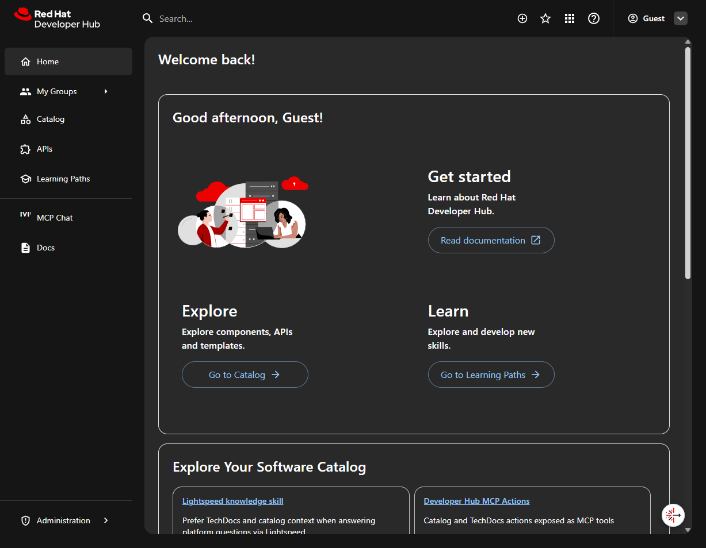
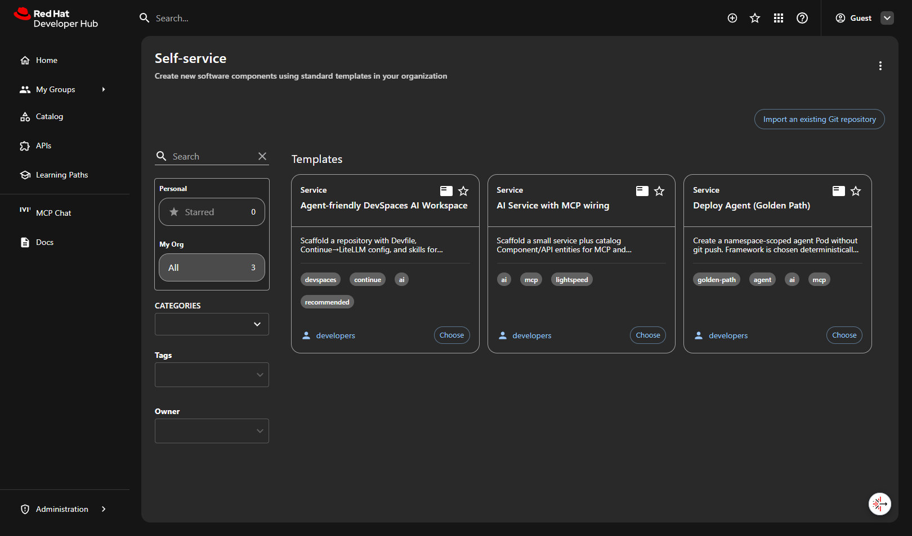
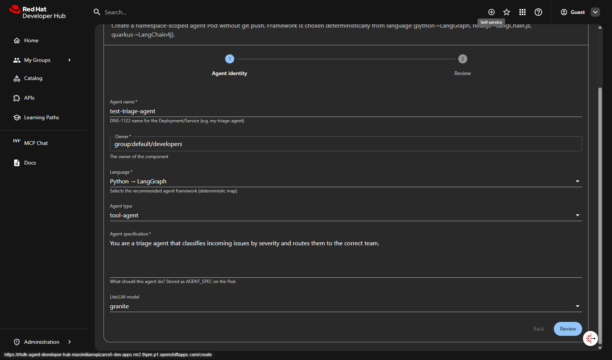
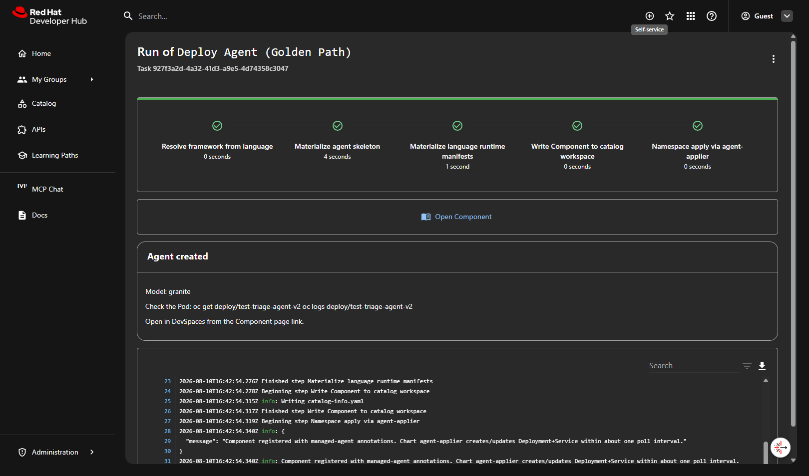
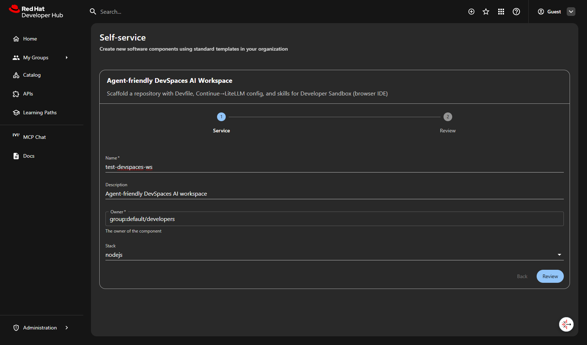
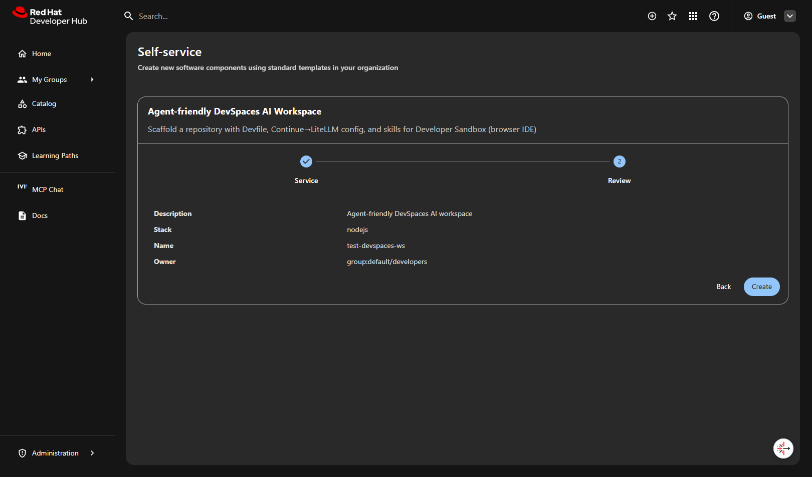
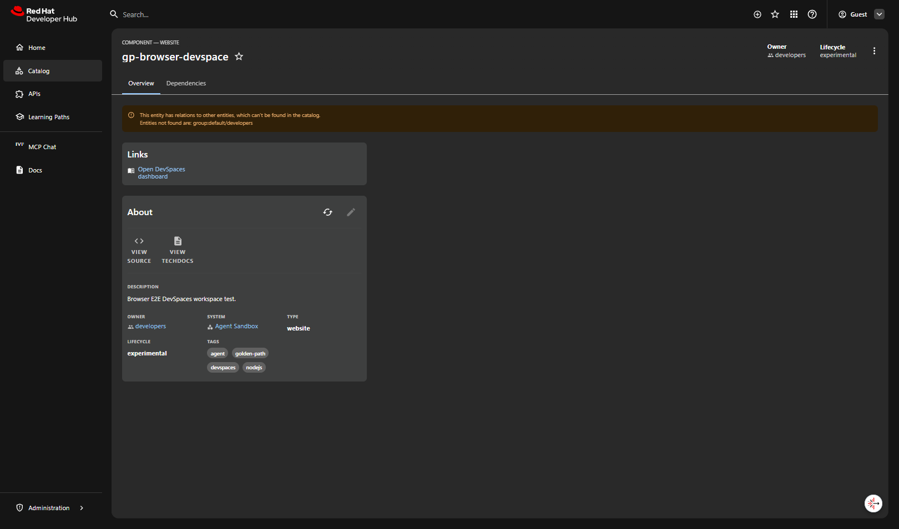
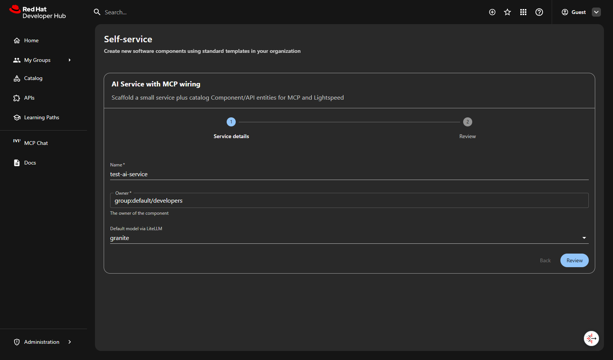
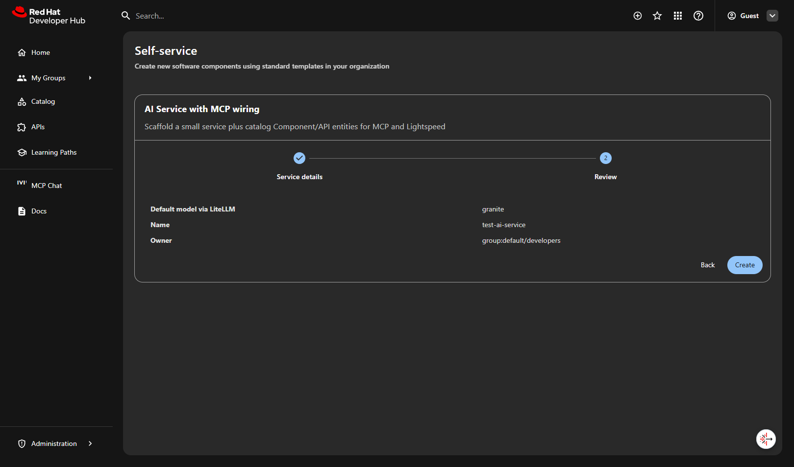
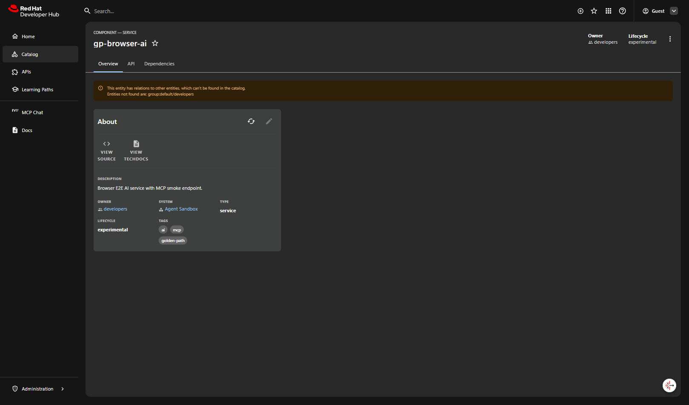

End-to-end walkthrough of the three Golden Paths: Deploy Agent, DevSpaces AI Workspace, and AI Service with MCP wiring.

Step 01Developer Hub homeLogin as Guest and land on the home page. Explore, Learn, and Self-service cards are ready.

Step 02Three Golden PathsThree templates available: Agent-friendly DevSpaces AI Workspace, AI Service with MCP wiring, and Deploy Agent (Golden Path).

Step 03Deploy Agent — formFill agent name, owner, language (Python/Node.js/Quarkus), agent spec, and model. Framework is resolved deterministically.

Step 04Deploy Agent — successAll steps green: skeleton materialized, runtime manifests applied, Component registered. The agent-applier creates the Deployment + Service automatically.

Step 05DevSpaces Workspace — formChoose a name, owner, and stack (nodejs/python/quarkus). This scaffolds a browser IDE workspace with Devfile + Continue AI config.

Step 06DevSpaces Workspace — reviewReview the parameters before creation: Description, Stack, Name and Owner are confirmed.

Step 07DevSpaces Workspace — successFetch skeleton + Publish instructions complete. Next steps guide you to push to Git, open in DevSpaces, and wire Continue to LiteLLM.

Step 08AI Service with MCP — formName your service, pick an owner, and select the default LLM model (granite or qwen3) via LiteLLM proxy.

Step 09AI Service with MCP — reviewConfirm model (granite), service name, and owner before scaffolding the AI service with MCP wiring.

Step 10AI Service with MCP — successSkeleton fetched and logged. "Connect to Lightspeed" output tells you how to point clients at the LiteLLM route and register MCP servers.
# Deploy Agent — check the deployed podocgetdeploy/<agent-name>
oclogsdeploy/<agent-name>
curl-shttp://<agent-name>:8080/health|jq.
# DevSpaces — push and open workspacegitpush&&openDevSpacesfactoryURL
# AI Service — point clients at LiteLLMcurl-shttps://<litellm-route>/v1/models-H"Authorization: Bearer $KEY"